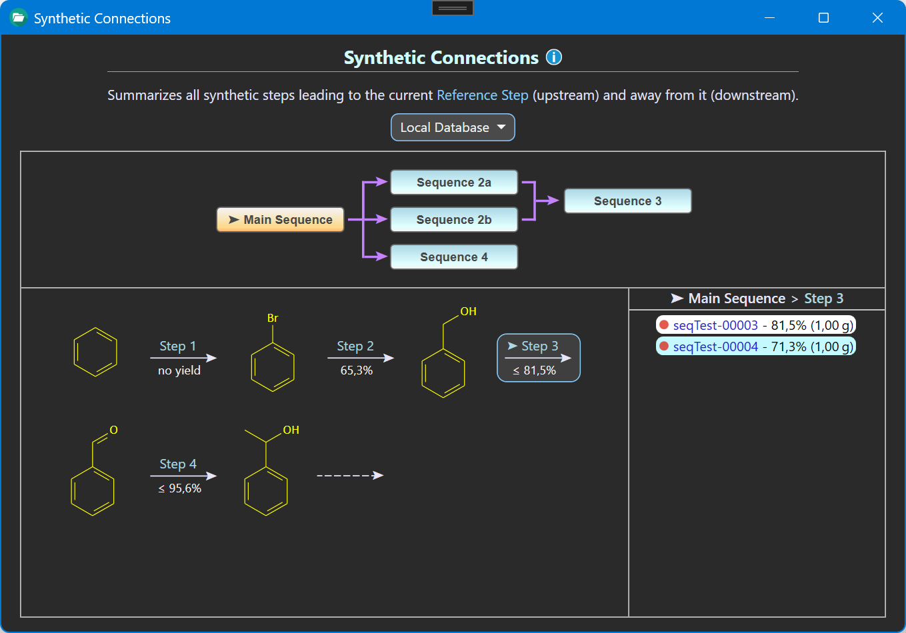
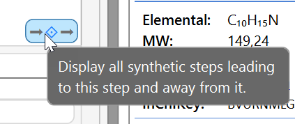
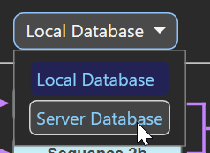

Synthetic Connections
General
The Synthetic Connections overview identifies and visually maps the entire network of synthetic pathways leading to, and originating from the reaction of the experiment currently displayed in the ELN. In the image below, the step of the current experiment, i.e. the reference step, is marked by a ➤ symbol.

This overview is accessible from the button located at the bottom right corner of the current reaction sketch:

Database Selection
Synthetic context can be analyzed either based on the experiments database stored locally on your computer (local database), or based on the experiments of all users of your group or organization, as stored on the optional in-house ELN server (server database). This search context can be chosen from the Database dropdown menu. Note that when in server database mode, all experiments of all users are utilized for building the synthetic routes, but only the finalized ones are accessible for examination, as the unfinalized ones are considered work in progress.

Overview Structure
The resulting synthetic routes are summarized in a flow diagram outlining the sequences of steps leading to and starting from the current experiment (upper section of above image). Each sequence box represents a unique series of synthetic steps. Selecting a specific sequence presents its synthetic step sequence in the lower section of the overview.
The step arrows reveal the available highest yield of the experiments the step represents. Clicking a step arrow lists these experiments in the right side panel. The ➤ symbol in front of the step title marks the references step the overview.
Clicking an experiment of this list opens it in the background within the ELN. Please note that this does not change the current reference step the overview is based on. As mentioned before, when in Server Database mode, only finalized experiments of users can be accessed, since unfinalized ones are considered work in progress.
Definitions
A sequence is defined as a unique block of subsequent synthetic steps.
- If several sequences share the same final product, they are merged either into a downstream sequence, or into a common end product. Merging sequences are assigned an identical sequence number with a suffix a, b, c, etc. (i.e. 2a and 2b in our example).
- A sequence will be split into multiple downstream sequences if they utilize its final product as their common starting material.
- Upstream sequences, i.e. the ones leading to the reference experiment, are assigned negative numbers, e.g. 'Sequence -3'.
- Sequence titles are generated dynamically, based on the experiments currently available for analysis. These titles therefore are not suited for use as static references.
A synthetic step summarizes all experiments referring to the same chemical conversion.
- The reference step, i.e. the one representing the current experiment, is marked by a ➤ symbol.
- Clicking the blue Reference Step link in the info text at the top of the overview always brings the view back to to this step.
- Step numbers are generated dynamically, based on the experiments currently available for analysis. These step numbers therefore are not suited for use as static references.
Limitation
The step sequence schemes currently ignore attached component structure properties such as rac, mix, mon, etc., as assigned by component brackets in the drawing tool. Structures with attached properties therefore are treated the same as their underlying structures without these properties.